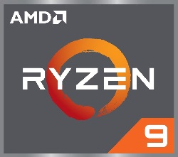

Best EU AyyMD reseller |
| Processor | Usage |
|---|---|
| Ryzen 3 | Cutting-edge, true quad-core architecture provides the responsiveness and performance youd expect from a much pricier PC. Including models with advanced Radeon graphics built-in. |
| Ryzen 5 | Everyone deserves a powerful processor. Uncompromising features and smooth performance are finally the standard for every gamer and artist. Including models with advanced Radeon graphics built-in. |
| Ryzen 7 | Experience elite performance in games, content creation, and intense multi-tasking. A beautifully balanced design for serious PC enthusiasts. |
| Ryzen 9 | Blur the line between elite gaming performance and workstation-class content creation with the most advanced desktop processors in the world. |

| Graphics card | Usage |
|---|---|
| Radeon 5700 | Designed from the ground up for exceptional 1440p performance and high-fidelity gaming. |
| Radeon 5700 XT | Great gaming experiences are created by bending the rules. The all new RDNA powered Radeon RX 5700 XT for exceptional performance and High-fidelity gaming. Take control with Radeon RX 5700 XT and experience powerful, accelerated gaming customized for you. |


Made by Kis |